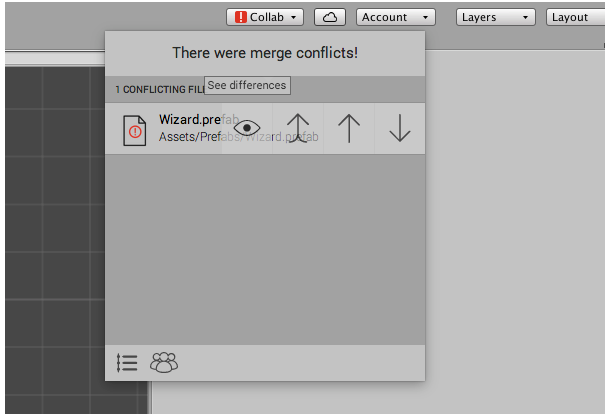
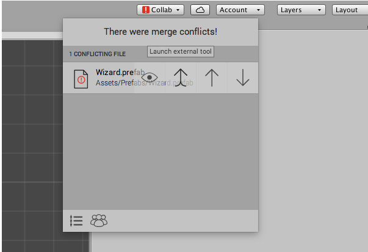
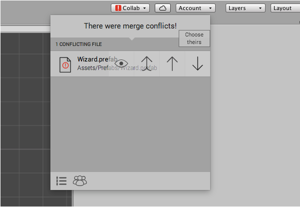

Resolving file conflicts
A conflict occurs when another team member makes changes to an Asset that you have also changed, and you try to update your Project with those changes. Collaborate automatically attempts to merge files and informs you if the attempt fails due to a conflict. For text files, Collaborate merges files using the currently configured merge tool. For Scenes and other files using the YAML format, Collaborate uses Unity's Smart Merge tool to perform the merge.
You can reduce the occurrence of conflicts by publishing small changes often, and communicating with your teammates. The In-Progress feature can help you reduce conflicts on scenes and prefabs. For more information, see In-Progress edit notifications.
Configure your merge tool
You can set your external merge tool in the preference settings of the Unity Editor:
- On the Editor menu bar, select Edit > Preferences.
- Click External Tools and, from the Revision Control Diff/Merge drop-down menu, select an external merge tool.
The following merge tools work well with Collaborate:
- Apple File Merge
- WinMerge
- Beyond Compare 4
- SourceGear DiffMerge
- TkDiff
You might experience issues using other external merge tools.
Working with conflicts
After merging files, if there are any Assets with conflicts, Unity displays a red warning icon on the Collab button in the Editor toolbar. To view a list of Assets with conflicts, click the Collab button.
When you hover over an Asset in the list, the conflicts dialog shows four actions for each Asset with a conflict. You can:
- See differences, to view the conflicting changes.
- Launch external tool, to open an external merge tool.
- Choose mine, to publish your changes, overwriting the currently saved version of the Asset .
- Choose theirs, to delete your changes and use the version of the Asset currently in the cloud.
To view a conflict, hover over the conflicted file and click the eye icon.

Note: You can view changes of prefabs, scripts, and all binary files; however you cannot view changes to image files such as .pngs.
You can use an external merge tool to resolve conflicts on prefabs, scripts, and other text-based files. To resolve the conflict using an external merge tool, click the double-up arrow.

To replace the version of the Asset in the cloud with your version of the Asset, click the single up arrow.
To discard your version of the Asset and apply the version in the cloud to your local project, click the down arrow.
